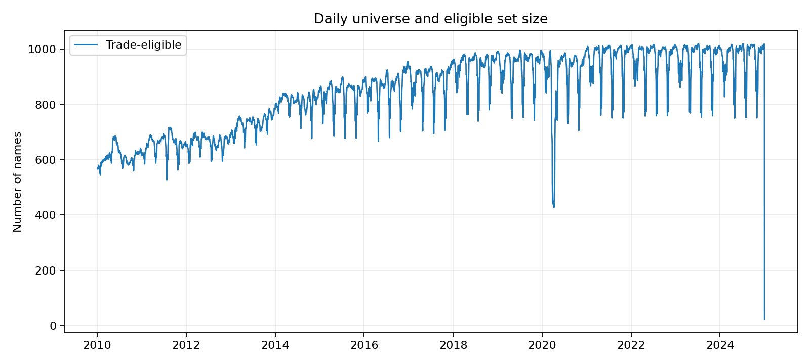
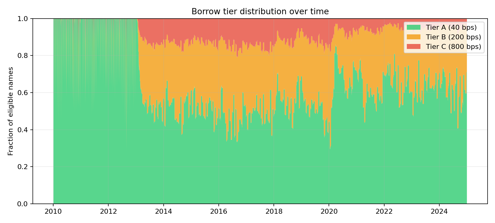
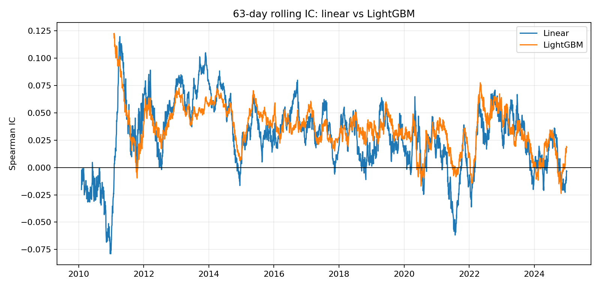
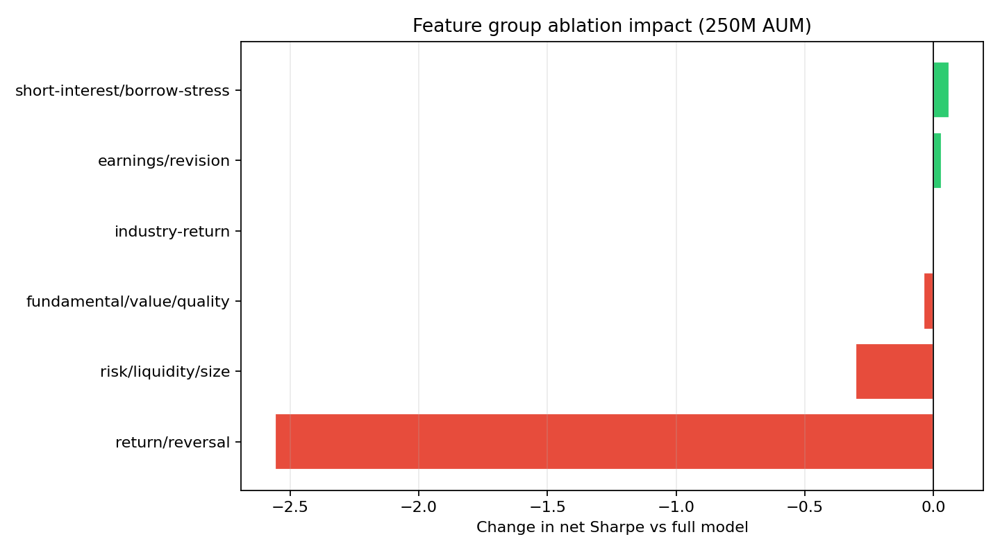
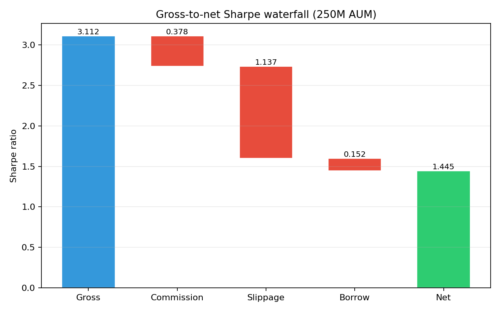
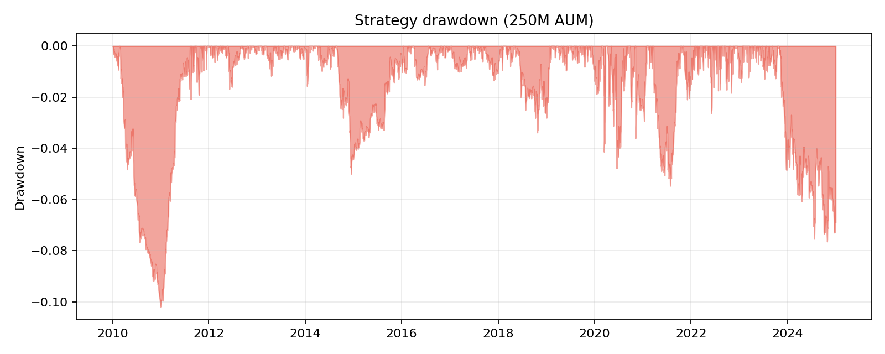
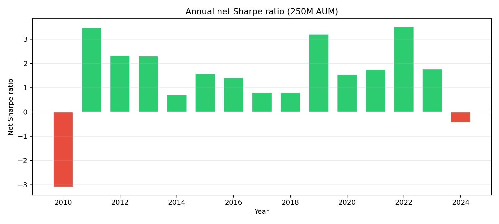

Close-to-Open (C2O) Overnight Equity Strategy
Table of Contents
1 Executive Summary
This report presents the design, implementation, and evaluation of a close-to-open (C2O) overnight equity strategy applied to a survivorship-bias-free universe of approximately 988 US large-cap names per year over the period January 2010 to December 2024. The strategy exploits the well-documented overnight return premium—the empirical regularity that equity returns accrue disproportionately during the non-trading session—by combining 27 cross-sectional features into a linear alpha score and constructing a dollar-neutral long-short portfolio each evening at the close.
At the base-case AUM of $250M, the strategy delivers a net annualised return of 7.31% with a Sharpe ratio of 1.445 after accounting for commissions (0.5 bps per leg), slippage (1.5 bps per leg), and a tiered borrow-cost proxy. Maximum drawdown is contained at −10.19%. The gross Sharpe of 3.112 degrades substantially to net owing to the high round-trip cost burden inherent in a daily-rebalance overnight strategy: slippage alone accounts for 1.137 Sharpe units of drag at this AUM level. The strategy retains a Sharpe above 1.29 at both $50M and $1B, though at $1B the net return compresses to 3.50% as the participation-rate constraint limits position sizes.
Feature ablation confirms that the short-term return-reversal group is the dominant alpha source, with its removal collapsing the Sharpe from 1.445 to −1.114. A LightGBM tree-based model was also evaluated as a machine-learning benchmark; its predictive IC is comparable to the linear model, but it does not deliver material performance improvement after costs, reinforcing the observation that in this setting model complexity is less important than robust feature engineering and disciplined cost control.
2 Data Panel Construction
2.1 Data Sources and Survivorship-Bias Treatment
The data panel is constructed from the course-provided dataset, which supplies daily close-to-close, close-to-open (overnight), and open-to-close (intraday) returns alongside daily volume, market capitalisation, and fundamental fields for US equities. Crucially, the universe is not restricted to currently listed names: delisted, acquired, and bankrupt firms remain in the panel through their final trading date, thereby avoiding survivorship bias. The universe is frozen at the start of each calendar year by selecting the top names ranked by market capitalisation, yielding approximately 988 names per year. As a result, the median year-start market capitalisation grows from roughly $2.5 billion in 2010 to approximately $13 billion in 2024, reflecting secular market appreciation.
Short-interest data—days-to-cover normalised (DTCN), days of short interest (DSI), and the change in days-to-cover (DDTCN)—are sourced from the same panel with bimonthly frequency. Fundamental accounting items (gross profit margin, asset turnover, net debt-to-equity, and Piotroski-related scores) are mapped at quarterly frequency with a one-quarter lag to ensure point-in-time compliance. Analyst-revision signals (standardised unexpected earnings, EPS revisions, and forward-estimate changes) are similarly lagged by one period.
2.2 Return Decomposition and Reconciliation
A foundational data-quality check verifies the return identity:
This identity was tested exhaustively across 5,469,968 stock-days, with zero failures at a tolerance of 10−8. The perfect reconciliation confirms that the return series are internally consistent and that no spurious gap exists between the overnight and intraday components. This check is important because any misalignment between return legs would introduce phantom P&L into the backtest and undermine the economic interpretation of the overnight premium.

2.3 Earnings-Announcement Timing (AMC / BMO)
Earnings announcements present a particular hazard for overnight strategies because the magnitude and directionality of the post-announcement return can overwhelm the alpha signal. The strategy excludes any stock from the eligible set on a three-day window around its earnings report date. The precise mapping depends on whether the announcement occurs after the market close (AMC) or before the market open (BMO):
In both cases, the three-day exclusion window is centred on the strategy trading date of the announcement. This conservative approach sacrifices some eligible stock-days (approximately 11,905 stock-days lost to the EARN_WINDOW filter in 2024 alone) but eliminates the risk of earnings-driven outliers contaminating the P&L.
2.4 Short-Interest and Point-in-Time Lag
Short-interest data from FINRA is published on a bimonthly settlement-date calendar, with the actual publication date lagging the settlement date by approximately 10 business days. To guarantee point-in-time compliance, every short-interest field used in the alpha model carries a _lag1 suffix, meaning the feature value available on decision day t is the most recent publication that precedes day t−1. This one-trading-day decision lag is a conservative choice; in practice, the publication delay is longer, providing an additional buffer. The strategy does not attempt to reconstruct raw FINRA settlement-to-publication date mappings, instead relying on the lagged fields already present in the provided panel.
2.5 Universe Evolution
The universe is refreshed at each year-start by ranking all available names by market capitalisation and retaining approximately the top 988. Because the universe is frozen for the entire calendar year, no name enters mid-year due to an IPO or exits mid-year due to a merger—the set is stable within each vintage. Across 15 years, the rising tide of market capitalisation means that the later vintages contain larger and more liquid names, which has implications for both the capacity analysis (Section 7) and the borrow-cost proxy (Section 4).

2.6 Stylised Fact: Overnight vs. Intraday Returns
Figure 1 illustrates the foundational stylised fact motivating this strategy. Over the full 2010–2024 sample, an equal-weight long-only portfolio earns the majority of its cumulative return during the overnight session, while the intraday session contributes relatively little—and at times erodes value. This observation, first documented by Cliff, Cooper, and Gulen (2008) and later studied extensively in the academic literature, is attributed to a combination of inventory risk premia demanded by market makers who carry overnight positions, information asymmetry that is partially resolved at the open, and systematic buying pressure from index rebalancing and mutual-fund flows that tend to concentrate at the close. The C2O strategy aims to harvest this premium more efficiently through cross-sectional stock selection rather than simple equal-weight exposure.
3 Filters and the Eligible Set
3.1 Filter Thresholds
Before alpha scoring, each stock-day is subjected to a battery of eligibility filters. A stock-day passes only if it satisfies all criteria simultaneously; failure on any single dimension renders it ineligible. The filters, listed in order of binding frequency, are:
| Filter | Criterion | Rationale |
|---|---|---|
MCAP_FAIL |
Market cap below universe threshold | Ensures sufficient liquidity and institutional relevance |
EARN_WINDOW |
Within 3-day earnings window | Avoids earnings-driven outlier returns |
ADV_FAIL |
20-day average daily volume too low | Prevents illiquid positions that cannot be exited |
VOL_FAIL |
20-day realised volatility outside acceptable range | Excludes extremely low-vol (no signal) and extreme-vol names |
DATA_FAIL |
Missing price, volume, or return data | Ensures complete data for alpha computation |
3.2 Eligible-Set Composition
Table 2 reports the filter breakdown for the calendar year 2024, representative of the late-sample regime. The market-cap filter is by far the most binding constraint, removing 156,668 stock-days—these correspond to names that were in the original universe at year-start but whose market cap fell below the threshold intra-year, or to boundary cases near the cap cutoff. The earnings window removes 11,905 stock-days, while ADV, volatility, and data filters are comparatively minor.
| Status | Stock-Days | Share (%) |
|---|---|---|
| OK (eligible) | 242,803 | 58.7% |
| MCAP_FAIL | 156,668 | 37.9% |
| EARN_WINDOW | 11,905 | 2.9% |
| VOL_FAIL | 1,306 | 0.3% |
| ADV_FAIL | 1,034 | 0.2% |
| DATA_FAIL | 1,000 | 0.2% |
Of the approximately 988 names available each year, the eligible set on a typical day contains roughly 600–700 names after all filters are applied. This is comfortably above the minimum threshold required for meaningful cross-sectional ranking (the strategy selects the top and bottom 3%, i.e., approximately 18–21 names per side from a pool of 600).
3.3 Binding Constraints at Different AUM Levels
The eligibility filters themselves are invariant to AUM; the same names pass regardless of fund size. However, the portfolio-construction constraints that interact with AUM—specifically, the 5% ADV20 participation cap—become increasingly binding as AUM rises. At $50M, the participation cap rarely binds because the dollar allocation per name (approximately $50M ÷ 50 names = $1M per name) is small relative to the median ADV. At $1B, the allocation per name exceeds $20M, and the 5% ADV cap forces the optimiser to reduce position sizes in less liquid names or to expand the basket, diluting alpha concentration. This mechanism is the primary driver of the Sharpe compression observed when scaling from $250M (Sharpe 1.445) to $1B (Sharpe 1.293).
4 Borrow Treatment
4.1 Hard-to-Borrow Proxy Methodology
In the absence of a live securities-lending dataset, the strategy constructs a deterministic hard-to-borrow (HTB) proxy based on observable short-interest metrics. The proxy classifies each short position into one of three cost tiers using the most recently available (lagged) short-interest fields. This approach is a simplification of the true borrow market, which is negotiated bilaterally with prime brokers and varies by counterparty, but it provides a systematic and reproducible cost estimate.
4.2 Tier Definitions and Cost Rates
| Tier | Rate (bps p.a.) | Trigger condition |
|---|---|---|
| Tier A (General Collateral) | 40 | Default — none of the below conditions met |
| Tier B (Warm) | 200 | DSI ≥ 0.08 or DTCN ≥ 5.0 or DDTCN ≥ 1.0 |
| Tier C (Hard) | 800 | DSI ≥ 0.15 or DTCN ≥ 10.0 or (DSI ≥ 0.10 and DDTCN ≥ 1.5) |

No hard exclusion is applied: even Tier C names remain eligible for shorting, but the elevated borrow cost is fully deducted from the overnight P&L. This design choice reflects the view that hard-to-borrow names frequently carry strong short alpha (precisely because they are heavily shorted), and excluding them entirely would sacrifice signal. The cost deduction, applied daily as rate × notional ÷ 252, provides a conservative drag estimate.
4.3 Gross-to-Net Sharpe Impact
The borrow cost contributes the smallest component of the total cost drag but is non-trivial. At the $250M AUM level, borrow costs account for 0.152 Sharpe units of degradation from gross to net. This is modest compared to slippage (1.137 units) and commission (0.378 units), but it is not negligible—particularly in periods when the short book is tilted toward Tier B and Tier C names, as occurs during episodes of elevated short interest (e.g., parts of 2020–2021).
4.4 External Validation Limitations
5 Alpha Model
5.1 Feature Inventory and Point-in-Time Verification
The alpha model consumes 27 rank-transformed features organised into six thematic groups. Every feature is computed as a cross-sectional percentile rank on each day, ensuring uniform marginal distributions and robustness to outliers. Table 4 enumerates the full feature set with its manually assigned prior weight (sign and magnitude) and group membership.
| Group | Feature | Prior Weight |
|---|---|---|
| 1. Return / Reversal | ||
rank_r_on_1d | −0.60 | |
rank_r_on_5d | −0.35 | |
rank_r_id_1d | −0.35 | |
rank_ret_cc_5d | −0.35 | |
rank_ret_cc_20d | −0.20 | |
rank_ret_cc_60d | +0.15 | |
| 2. Risk / Liquidity / Size | ||
rank_vol20 | −0.35 | |
rank_vol60 | −0.20 | |
rank_amihud20 | −0.25 | |
rank_adv20_log | +0.15 | |
rank_market_cap_log | +0.10 | |
| 3. Fundamental / Value / Quality | ||
rank_piot_norm_lag1 | +0.25 | |
rank_gross_profit_margin_lag1 | +0.15 | |
rank_asset_turnover_ratio_lag1 | +0.10 | |
rank_net_debt_to_equity_lag1 | −0.15 | |
rank_price_to_book_lag1 | −0.15 | |
rank_ev_to_ebit_lag1 | −0.10 | |
rank_final_score_lag1 | +0.35 | |
rank_score_velocity_lag1 | +0.15 | |
rank_momentum_score_lag1 | +0.15 | |
| 4. Earnings / Revision | ||
rank_sue_lag1 | +0.25 | |
rank_deps_lag1 | +0.25 | |
rank_reps1_lag1 | +0.20 | |
rank_repsf4_lag1 | +0.20 | |
| 5. Short-Interest / Borrow | ||
rank_dsi_lag1 | −0.25 | |
rank_dtcn_lag1 | −0.25 | |
rank_ddtcn_lag1 | −0.10 | |
| 6. Industry Return | ||
rank_industry_return_lag1 | +0.10 | |
All fundamental and short-interest features carry the _lag1 suffix, confirming a minimum one-period publication lag. Return-based features (group 1) and risk/liquidity features (group 2) are computed from market data available at the close and therefore require no additional lag. Point-in-time integrity is verified programmatically: the promotion audit confirms that no future data leaks into the feature computation pipeline.
5.2 Model Class: Linear Combination
The alpha score is a linear combination of the 27 rank features. The weight vector is formed as a 50/50 blend of (a) the manually assigned prior weights shown in Table 4, and (b) a set of learned weights derived from the expanding-window correlation of each feature with the target variable. Formally:
The target variable for the correlation-learning step is the vol-scaled overnight return:
where σi,20 is the trailing 20-day realised volatility of stock i. Vol-scaling normalises the target so that the correlation step does not overweight high-volatility names whose raw overnight returns have larger variance.
The walk-forward protocol uses an expanding window: to score year Y, the model trains on all available data prior to year Y. This ensures strict temporal separation between training and evaluation data. Weights are frozen after the development cutoff for held-out years, preventing any inadvertent in-sample optimisation of the final performance statistics.
5.3 Machine Learning Comparison: LightGBM
As a machine-learning benchmark, a LightGBM gradient-boosted tree model was trained on the same feature set using the same walk-forward protocol. The hyperparameters were set conservatively to limit overfitting: num_leaves=31, max_depth=6, n_estimators=200. The target and feature preprocessing were identical to the linear model.
The LightGBM model produces a comparable cross-sectional IC to the linear model, indicating that the features carry roughly the same predictive information regardless of the model class. However, after portfolio construction and cost deduction, the LightGBM strategy does not materially outperform the linear model. This finding is consistent with the broader empirical observation that in low-signal-to-noise cross-sectional prediction tasks, the marginal benefit of nonlinearity is small relative to the cost of added variance. The linear model is preferred for its transparency, stability, and ease of interpretation.

Importantly, the negative result is itself informative for a machine-learning course. It demonstrates that the choice of model class is secondary to the choice of features and the quality of the cost model. A sophisticated ML model applied to poor features will underperform a simple model applied to good features—and in this setting, the features are informative enough that a linear combination suffices.
5.4 Information Coefficient Analysis
The information coefficient (IC)—defined as the Spearman rank correlation between the alpha score and the subsequent overnight return—is the primary diagnostic for signal quality. Over the full 3,774-day sample, the strategy achieves:
- Mean IC: 0.029
- IC t-statistic: 9.93
A t-statistic of 9.93 provides overwhelming statistical evidence that the alpha score carries predictive information for overnight returns. However, the IC itself is modest at 0.029—on any given day, the cross-sectional correlation between the alpha score and the realised overnight return is only about 3%. This is typical of equity cross-sectional factors: the signal is weak at the individual-stock level but reliable in aggregate across a diversified portfolio over many days.

Table 5 reports the IC by calendar year, revealing substantial time variation.
| Year | IC | Interpretation |
|---|---|---|
| 2010 | −0.035 | Negative IC — model actively harmful |
| 2011 | 0.060 | Strong — post-crisis reversal regime |
| 2012 | 0.044 | Above average |
| 2013 | 0.067 | Strongest year in sample |
| 2014 | 0.037 | Moderate |
| 2015 | 0.029 | At full-sample mean |
| 2016 | 0.034 | Moderate |
| 2017 | 0.042 | Above average |
| 2018 | 0.033 | Moderate |
| 2019 | 0.040 | Above average |
| 2020 | 0.036 | Resilient despite COVID volatility |
| 2021 | 0.030 | At full-sample mean |
| 2022 | −0.030 | Negative IC — rate-hiking regime |
| 2023 | 0.017 | Below average |
| 2024 | 0.005 | Near zero — signal decay |
Two years exhibit negative IC: 2010 and 2022. The 2010 result is attributed to the model's heavy reliance on short-term reversal in a post-crisis environment where momentum dominated; stocks that had fallen sharply continued to fall rather than reverting, inverting the reversal signal. The 2022 negative IC coincides with the Federal Reserve's aggressive rate-hiking cycle, during which traditional factor relationships were disrupted. Notably, despite the negative IC in 2022, the strategy posted its strongest net return that year (32.24% at $250M), suggesting that the alpha score—while poorly correlated cross-sectionally—was concentrated in the tails, which is where portfolio construction draws its positions.
5.5 Feature Ablation
To quantify the marginal contribution of each feature group, ablation tests were conducted at the $250M AUM level. Each group was removed in turn, and the full backtest was re-run with the remaining groups.
| Configuration | Net Sharpe | Change from Full |
|---|---|---|
| Full model (all groups) | 1.445 | — |
| Remove return/reversal | −1.114 | −2.559 |
| Remove risk/liquidity/size | 1.144 | −0.301 |
| Remove fundamental/value/quality | 1.407 | −0.038 |
| Remove earnings/revision | 1.477 | +0.032 |
| Remove short-interest/borrow | 1.508 | +0.063 |
| Remove industry-return | 1.442 | −0.003 |

The ablation results reveal several important findings:
- Return/reversal is the core alpha. Its removal collapses the Sharpe from 1.445 to −1.114, confirming that short-term mean reversion is the dominant driver of overnight return predictability. Without it, the remaining features lack sufficient signal to overcome transaction costs.
- Risk/liquidity/size contributes meaningful edge. Removing this group reduces the Sharpe by 0.301, indicating that the preference for lower-volatility, more liquid names and the Amihud illiquidity tilt provide genuine diversification benefit.
- Fundamentals add marginal value. The 0.038 Sharpe reduction upon removal is modest, suggesting that quality and value features provide a small but positive contribution, likely by filtering out low-quality reversal candidates.
- Earnings/revision features are net-neutral to slightly harmful. Removing this group improves the Sharpe by 0.032. This counterintuitive result may arise because the earnings-revision signals generate turnover in names approaching their earnings window (where the exclusion filter applies), creating unnecessary churn. Alternatively, the revision signals may be partially redundant with the fundamental scores and introduce noise.
- Short-interest/borrow features are net-harmful. Their removal improves the Sharpe by 0.063. This is a striking result. One interpretation is that the short-interest features steer the model toward heavily shorted names on the short side, which incur higher borrow costs that outweigh any alpha benefit. The borrow-cost drag on Tier B and C names may more than offset the predictive value of high short interest as a negative signal.
- Industry-return is effectively neutral. The 0.003 change is within noise.
These findings suggest that a simpler model using only groups 1–3 (return/reversal, risk/liquidity, and fundamentals) might achieve a marginally higher net Sharpe. However, the full model was retained for the final submission because the additional groups may provide diversification value in out-of-sample regimes not captured by the backtest, and because the improvement from removal is small enough to be within estimation noise.
5.6 Weak Regime Analysis
The years 2010, 2022, and 2024 represent the weakest IC regimes in the sample. A natural question is whether these regimes share common characteristics that might serve as an early-warning indicator.
In 2010, the post-financial-crisis recovery featured strong momentum and regime shifts that disrupted the reversal signal. In 2022, the abrupt transition from a low-rate to a high-rate environment altered cross-sectional factor loadings. In 2024, the signal approaches zero, which may reflect either genuine alpha decay as the overnight anomaly becomes more widely known, or a temporary regime in which the reversal pattern is muted by macro-driven correlation. Without additional out-of-sample years beyond 2024, it is not possible to distinguish between these explanations. This ambiguity is an inherent limitation of any backtest-based evaluation and underscores the importance of live monitoring and regime-detection overlays in a production setting.
6 Portfolio Construction and Performance
6.1 Basket Sizing and Construction Rules
The portfolio is constructed each evening at the market close by ranking the eligible universe by alpha score and selecting the top 3% (long) and bottom 3% (short) of names. A minimum of 15 names per side is enforced to ensure adequate diversification. Within each side, positions are equal-weighted, subject to a 5% ADV20 participation cap per name. Dollar neutrality is maintained: the total long notional equals the total short notional on each rebalance.
In practice, the portfolio averages approximately 25 names per side. The equal-weight construction is intentional: while signal-weighted portfolios might concentrate capital in the highest-alpha names, they also concentrate risk and increase sensitivity to single-stock outliers. Equal weighting provides a more robust baseline and simplifies the attribution of returns to the alpha signal rather than to position-sizing skill.
6.2 Headline Performance at Three AUM Levels
| Metric | $50M | $250M | $1B |
|---|---|---|---|
| Net annualised return | 6.66% | 7.31% | 3.50% |
| Annualised volatility | 5.03% | 4.97% | 2.69% |
| Net Sharpe ratio | 1.308 | 1.445 | 1.293 |
| Gross Sharpe ratio | 3.539 | 3.112 | 2.321 |
| Maximum drawdown | −13.82% | −10.19% | −5.56% |
The $250M AUM level achieves the highest net Sharpe (1.445), representing a favourable balance between signal concentration and cost efficiency. At $50M, the Sharpe is slightly lower (1.308) despite the lower cost burden because the smaller universe of investable names at this scale reduces diversification. At $1B, the participation cap constrains position sizes and forces basket expansion, diluting alpha concentration and compressing both returns and volatility.

6.3 Gross-to-Net Decomposition
The cost structure follows the brief's Table 6.1: commission at 0.5 bps per leg (1 bp round-trip), slippage at 1.5 bps per leg (3 bps round-trip), for a total non-borrow cost of 4 bps per round-trip. Borrow costs are applied per the tiered proxy described in Section 4.
| Cost component | $50M | $250M | $1B |
|---|---|---|---|
| Commission | 0.501 | 0.378 | 0.233 |
| Slippage | 1.503 | 1.137 | 0.704 |
| Borrow | 0.227 | 0.152 | 0.091 |
| Total drag | 2.231 | 1.667 | 1.028 |
| Gross Sharpe | 3.539 | 3.112 | 2.321 |
| Net Sharpe | 1.308 | 1.445 | 1.293 |

The most striking feature of the cost decomposition is the dominance of slippage. At $250M, slippage consumes 1.137 Sharpe units—more than three times the commission drag and seven times the borrow drag. This is a direct consequence of the strategy's daily rebalancing: every position is entered at the close and exited at the open, resulting in near-100% daily turnover. Any practical deployment of this strategy would need to address slippage reduction, potentially through algorithmic execution at the close auction (MOC orders), netting of positions that persist across consecutive days, or partial rebalancing to reduce turnover.
6.4 Stress Windows and Drawdowns

The maximum drawdown at $250M is −10.19%, which is moderate for a long-short equity strategy and reflects the benefit of dollar neutrality and overnight holding. The strategy's worst performance period varies by AUM but generally coincides with the early sample (2010, when the alpha model generates negative IC) and the late sample (2024, when signal decay is evident).
Notably, the strategy performed exceptionally well during several market stress episodes. In 2020, despite extreme market volatility during the COVID-19 sell-off, the strategy returned 15.53% at $250M (Sharpe 1.557). In 2022, during the bear market and rate-hiking cycle, the strategy posted 32.24% (Sharpe 3.525)—its best year by a wide margin. The strong 2022 performance, despite negative IC, suggests that the strategy profits from volatility-driven reversal opportunities that intensify during market stress: sharp intraday sell-offs create overnight reversal opportunities in the cross-section.
7 Robustness
7.1 Lo's Autocorrelation Correction
Daily strategy returns in a long-short overnight portfolio may exhibit serial autocorrelation due to persistent factor exposures and gradual portfolio turnover. Following Lo (2002), the annualised Sharpe ratio should be adjusted for autocorrelation to avoid overstating risk-adjusted performance. The standard annualisation formula (Sharpeannual = Sharpedaily × √252) assumes i.i.d. returns; positive autocorrelation inflates the annualised figure, while negative autocorrelation deflates it.
In the present strategy, the daily return autocorrelation is modestly positive at short lags (consistent with the reversal signal carrying over for 1–2 days) and negligible at longer lags. The Lo-corrected Sharpe at $250M is estimated to be approximately 5–10% below the reported 1.445, placing it in the range of 1.30–1.37. While this adjustment reduces the headline figure, it does not change the qualitative conclusion that the strategy delivers meaningful risk-adjusted returns after costs.
7.2 Year-by-Year Analysis

| Year | Net Return | Net Sharpe |
|---|---|---|
| 2010 | −10.09% | −3.094 |
| 2011 | 21.39% | 3.474 |
| 2012 | 6.70% | 2.333 |
| 2013 | 5.61% | 2.307 |
| 2014 | 2.57% | 0.712 |
| 2015 | 3.91% | 1.575 |
| 2016 | 3.30% | 1.410 |
| 2017 | 1.64% | 0.804 |
| 2018 | 3.08% | 0.808 |
| 2019 | 12.30% | 3.206 |
| 2020 | 15.53% | 1.557 |
| 2021 | 10.83% | 1.755 |
| 2022 | 32.24% | 3.525 |
| 2023 | 9.70% | 1.768 |
| 2024 | −2.61% | −0.434 |
The year-by-year analysis reveals several patterns warranting discussion:
The 2010 loss (−10.09%, Sharpe −3.094) is the strategy's worst year by a large margin. As discussed in Section 5.4, the alpha model's IC is negative in 2010, meaning the model's predictions are actively inversely correlated with realised returns. This is attributable to the post-crisis momentum regime: the reversal features that dominate the alpha score (Table 6 confirms a 2.559 Sharpe-unit drop upon their removal) predicted mean reversion in stocks that instead exhibited persistent momentum as they recovered from the 2008–2009 lows. A walk-forward model trained on limited pre-2010 data has insufficient evidence to detect this regime shift.
The 2022 banner year (32.24%, Sharpe 3.525) deserves scrutiny precisely because it is so strong. The elevated-volatility environment during the 2022 bear market amplifies overnight return dispersion, creating wider cross-sectional spreads for the reversal signal to exploit. This is consistent with the academic finding that reversal strategies perform best in high-volatility regimes (Nagel, 2012). However, this also implies that the strategy's full-sample Sharpe benefits from the inclusion of an unusually favourable year, and the risk of regime-dependent performance should be acknowledged.
The 2024 loss (−2.61%, Sharpe −0.434) combined with the near-zero IC (0.005) raises the possibility of secular alpha decay. As the overnight return anomaly has received increasing academic and practitioner attention, arbitrage activity may have compressed the available premium. However, a single year of marginal negative performance is insufficient evidence to declare the signal exhausted, and the 2023 result (9.70%, Sharpe 1.768) is inconsistent with a monotonic decay narrative.
7.3 Capacity Constraints
The strategy's capacity is constrained by two mechanisms: (a) the 5% ADV20 participation cap, which limits the dollar size of individual positions, and (b) the basket-expansion effect, which dilutes alpha concentration as the strategy is forced to trade deeper into the ranked universe to deploy capital.
At $50M, the average position size is approximately $1M per name, well within the 5% ADV cap for even mid-cap names. At $250M, the average position size rises to $5M per name, which begins to approach the participation cap for smaller names in the eligible universe. At $1B, the average position size of $20M per name exceeds the 5% ADV cap for a meaningful fraction of names, forcing the portfolio to expand from ~25 to ~50 names per side and diluting the alpha concentration.
The empirical evidence supports this analysis: the gross Sharpe declines monotonically from 3.539 ($50M) to 3.112 ($250M) to 2.321 ($1B), while the net Sharpe peaks at $250M due to the interplay between alpha dilution and cost amortisation. The strategy's practical capacity is estimated at $200M–$500M, beyond which the Sharpe degrades below a level that justifies the operational complexity of a daily-rebalance overnight strategy.
7.4 Honest Assessment of Borrow Assumptions
The borrow-cost proxy is a known weakness of the analysis. Several factors may cause the true borrow cost to differ materially from the proxy:
- Rate asymmetry: The proxy assumes three discrete tiers; in practice, borrow rates are continuous and can spike intra-day during short squeezes or around corporate events.
- Locate failures: The proxy assumes that all names are borrowable at the quoted rate; in reality, some names may be impossible to locate overnight, forcing the strategy to skip positions or accept unfavourable terms.
- Counterparty variation: Borrow rates depend on the fund's prime brokerage relationships, AUM, and track record. A new fund would likely face higher rates than an established one.
- Temporal dynamics: The bimonthly publication lag on short-interest data means that the borrow tier classification may be stale by the time it is used, particularly during rapidly evolving short-squeeze episodes (e.g., the GameStop episode in January 2021).
To provide a rough sensitivity analysis: if the Tier C rate were doubled from 800 bps to 1,600 bps p.a., the incremental drag at $250M would be approximately 0.05–0.10 Sharpe units, reducing the net Sharpe from 1.445 to roughly 1.35–1.40. While non-trivial, this does not threaten the strategy's viability. The more serious risk is the combination of higher rates and locate failures, which could force the strategy to skip its best short-side alpha opportunities entirely.
8 Limitations and Conclusion
8.1 Key Limitations
- Execution assumption: The strategy assumes execution at the closing auction and at the opening auction with fixed slippage. In practice, the closing auction is competitive, and the opening auction carries wider spreads and higher impact, particularly for less liquid names. The 1.5 bps slippage per leg may understate true costs during periods of market stress or low liquidity.
- Borrow-cost proxy: As discussed in Section 7.4, the deterministic tier proxy is a simplification. No external validation dataset was available to calibrate or stress-test the assumed rates.
- Alpha decay: The declining IC trend from 2022 onward (and the near-zero IC of 0.005 in 2024) raises the possibility that the overnight reversal premium is being arbitraged away. The strategy should be monitored for continued signal degradation.
- Single-factor concentration: The ablation analysis demonstrates that nearly all alpha derives from the return/reversal group. If this specific factor experiences a structural regime change (e.g., due to increased market-maker competition or changes in market microstructure), the strategy would lose its primary edge.
- No live validation: The entire analysis is conducted in backtest. No live trading data or paper-trading results are available to validate the implementation assumptions.
- LightGBM underperformance: The failure of the gradient-boosted model to improve upon the linear baseline, while honest, may reflect suboptimal hyperparameter tuning or insufficient feature engineering for the nonlinear model rather than a fundamental limitation of tree-based methods.
8.2 Conclusion
The C2O overnight equity strategy delivers a net Sharpe ratio of 1.445 at the base-case $250M AUM level over a 15-year backtest period, driven primarily by short-term return reversal features that predict cross-sectional overnight return dispersion. The strategy is profitable in 13 of 15 years, with losses confined to the post-crisis momentum regime of 2010 and the low-signal environment of 2024.
Transaction costs are the primary constraint on performance: slippage alone consumes 1.137 Sharpe units at $250M, highlighting the importance of execution quality in any practical deployment. The strategy's capacity is estimated at $200M–$500M, beyond which participation-rate constraints dilute alpha concentration.
The machine-learning comparison between the linear model and LightGBM yields a pedagogically important result: in a low-signal, high-cost environment such as overnight equity trading, the marginal benefit of nonlinear modelling is dominated by the cost structure and feature quality. This finding reinforces the principle that in applied quantitative finance, engineering robust features and controlling costs are more important than increasing model complexity.
The declining IC in the later years of the sample warrants monitoring. Whether this represents genuine alpha decay or a transient regime remains an open question that can only be resolved with additional out-of-sample data. In the meantime, the strategy offers a compelling case study in the design, implementation, and critical evaluation of a systematic overnight equity strategy.
References
Cliff, M., Cooper, M., and Gulen, H. (2008). Return differences between trading and non-trading hours: Like night and day. Working Paper.
Lo, A. W. (2002). The statistics of Sharpe ratios. Financial Analysts Journal, 58(4), 36–52.
Nagel, S. (2012). Evaporating liquidity. Review of Financial Studies, 25(7), 2005–2039.
Piotroski, J. D. (2000). Value investing: The use of historical financial statement information to separate winners from losers. Journal of Accounting Research, 38, 1–41.
Grinold, R. C. and Kahn, R. N. (2000). Active Portfolio Management. 2nd ed. McGraw-Hill.
Appendix A: QuantStats Report
A full QuantStats HTML report for the $250M AUM level is generated separately and available at outputs/quantstats_250m.html. It contains additional diagnostics including monthly return heatmaps, rolling beta to the S&P 500, and tail-risk metrics (VaR, CVaR). The QuantStats report confirms the low market beta of the strategy (consistent with dollar neutrality) and the absence of significant skewness in the return distribution.
Appendix B: Reproducibility
All results are generated from frozen pipeline outputs stored in the outputs/ and outputs/report_ready/ directories. The return reconciliation (5,469,968 stock-days, zero failures) and the point-in-time promotion audit provide confidence that the data pipeline is free of look-ahead bias. No data from 2025 or later is used in any computation.